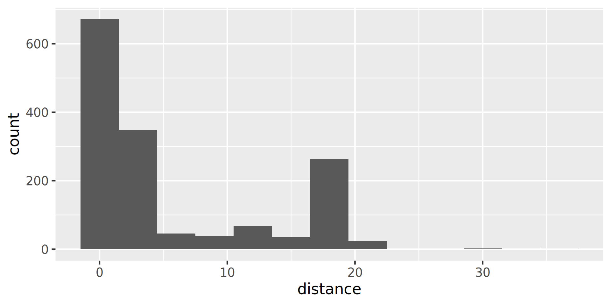
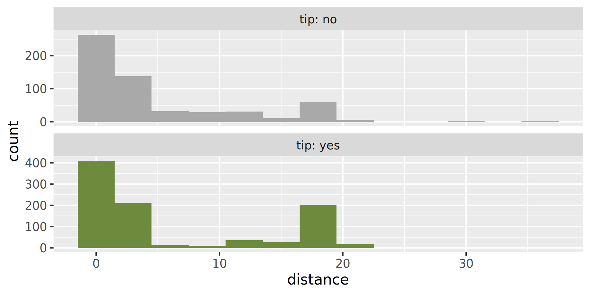
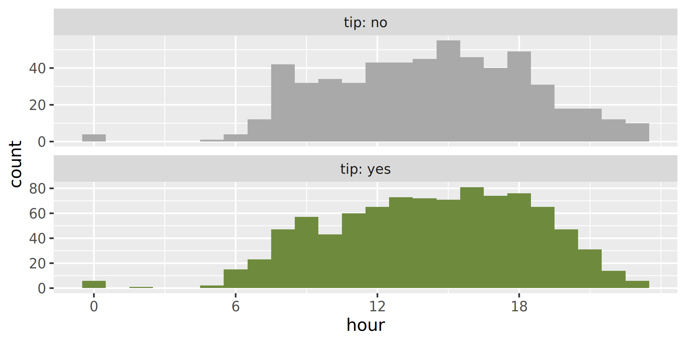
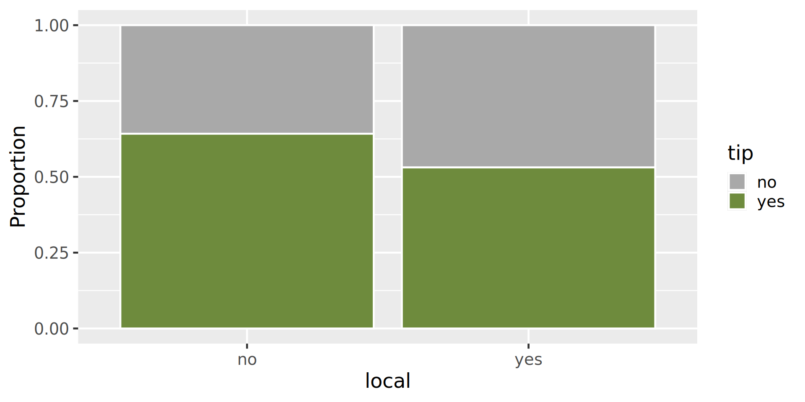
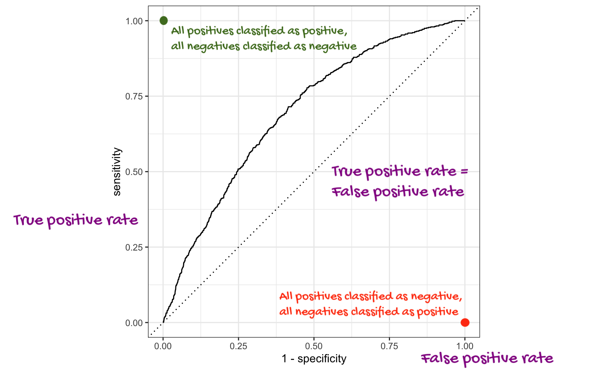

Spending your data
Lecture 20
Duke University
STA 199 - Fall 2026
November 11, 2026
Warm-up
While you wait: Participate 📱💻
What does set.seed() do?
- It generates a random number each time it is called.
- It seeds the data randomly.
- It sets the random number generator to a specific state so results are reproducible.
- It avoids skewness in results.
Go to wooclap.com and use the code ZUDFZMY.
Announcements
HW 6 due tonight 11:59 pm
Project write-up due Friday 11:59 pm – any questions?
Exam 2 review will be posted tomorrow and over the weekend I’ll ask you to submit questions for Monday’s review
Exam 2 is on Wednesday – get here on time please!
Spending your data
Data
Taxi trips in Chicago, IL in 2022
Data from Chicago Data Portal
Data: chicago_taxi
# A tibble: 2,000 × 7
tip distance company local dow month hour
<chr> <dbl> <chr> <chr> <chr> <chr> <dbl>
1 no 0.4 other yes Fri Mar 17
2 no 0.96 Taxicab Insurance Agency Llc no Mon Apr 8
3 no 1.07 Sun Taxi no Fri Feb 15
4 no 1.13 other no Sat Feb 14
5 no 10.8 Sun Taxi no Sat Apr 14
6 no 3.6 Chicago Independents no Wed Mar 12
7 no 1.08 Flash Cab yes Wed Mar 13
8 no 0.85 Taxicab Insurance Agency Llc no Tue Mar 8
9 no 17.9 City Service no Tue Jan 20
10 no 0 City Service yes Sun Apr 16
# ℹ 1,990 more rowsData: chicago_taxi
Rows: 2,000
Columns: 7
$ tip <chr> "no", "no", "no", "no", "no", "no", "no", "no", "no", "no", "…
$ distance <dbl> 0.40, 0.96, 1.07, 1.13, 10.81, 3.60, 1.08, 0.85, 17.92, 0.00,…
$ company <chr> "other", "Taxicab Insurance Agency Llc", "Sun Taxi", "other",…
$ local <chr> "yes", "no", "no", "no", "no", "no", "yes", "no", "no", "yes"…
$ dow <chr> "Fri", "Mon", "Fri", "Sat", "Sat", "Wed", "Wed", "Tue", "Tue"…
$ month <chr> "Mar", "Apr", "Feb", "Feb", "Apr", "Mar", "Mar", "Mar", "Jan"…
$ hour <dbl> 17, 8, 15, 14, 14, 12, 13, 8, 20, 16, 20, 8, 15, 15, 12, 0, 1…Data prep
Outcome and predictors
- Outcome -
tip: Whether rider left a tip – a factor w/ levels “yes” and “no” - (Potential) predictors:
- Numerical:
distance: The trip distance, in odometer miles.hour: The hour of the day in which the trip began.
- Categorical:
company: The taxi company – companies that occurred few times were binned as “other”.local: Whether the trip started in the same community area as it began.dow: The day of the week in which the trip began.month: The month in which the trip began.
- Numerical:
Should we include a predictor?
To determine whether we should include a predictor in a model, we should start by asking:
Is it ethical to use this variable? (Or even legal?)
Will this variable be available at prediction time?
Does this variable contribute to explainability?
Data splitting and spending
We’ve been cheating!
So far, we’ve been using all the data we have for building models. In predictive contexts, this would be considered cheating.
Evaluating model performance for predicting outcomes that were used when building the models is like evaluating your learning with questions whose answers you’ve already seen.
Spending your data
For predictive models (used primarily in machine learning), we typically split data into training and test sets:

The training set is used to estimate model parameters.
The test set is used to find an independent assessment of model performance.
Warning
Do not use, or even peek at, the test set during training.
How much to spend?
The more data we spend (use in training), the better estimates we’ll get.
Spending too much data in training prevents us from computing a good assessment of predictive performance.
Spending too much data in testing prevents us from computing a good estimate of model parameters.
The initial split
Setting a seed
What does set.seed() do?
To create that split of the data, R generates “pseudo-random” numbers: while they are made to behave like random numbers, their generation is deterministic given a “seed”.
This allows us to reproduce results by setting that seed.
Which seed you pick doesn’t matter, as long as you don’t try a bunch of seeds and pick the one that gives you the best performance.
Accessing the data
The training set
# A tibble: 1,500 × 7
tip distance company local dow month hour
<fct> <dbl> <chr> <fct> <fct> <fct> <dbl>
1 yes 12.0 Flash Cab no Tue Jan 13
2 no 0.03 City Service yes Sat Apr 22
3 no 7.66 Sun Taxi no Thu Feb 14
4 yes 1.57 other no Thu Feb 18
5 no 6.26 Flash Cab no Wed Feb 9
6 yes 18.0 City Service no Thu Mar 19
7 yes 0.75 Sun Taxi no Mon Feb 10
8 yes 1.31 Sun Taxi no Sun Feb 14
9 yes 17.5 City Service no Wed Feb 7
10 yes 9.95 City Service no Sun Jan 19
# ℹ 1,490 more rowsThe testing data
🙈
Exploratory data analysis
Initial questions
What’s the distribution of the outcome,
tip?What’s the distribution of numeric variables like
distanceorhour?How does the distribution of
tipdiffer across the categorical and numerical variables?
Participate 📱💻
Which dataset should we use for the exploration?
- The entire data
chicago_taxi - The training data
chicago_taxi_train - The testing data
chicago_taxi_test
Go to wooclap.com and use the code ZUDFZMY.
tip
What’s the distribution of the outcome, tip?
distance
What’s the distribution of distance?

tip and distance

tip and hour
Code
ggplot(chicago_taxi_train, aes(x = hour, fill = tip, group = tip)) +
geom_histogram(binwidth = 1, show.legend = FALSE) +
scale_fill_manual(values = c("yes" = "darkolivegreen4", "no" = "darkgray")) +
scale_x_continuous(breaks = seq(0, 18, by = 6)) +
facet_wrap(~tip, ncol = 1, labeller = label_both, scales = "free_y")
tip and local

tip and dow

Terminology
False negative and positive
False negative rate is the proportion of actual positives that were classified as negatives.
False positive rate is the proportion of actual negatives that were classified as positives.
Sensitivity
Sensitivity is the proportion of actual positives that were correctly classified as positive.
Also known as true positive rate and recall
Sensitivity = 1 − False negative rate
Useful when false negatives are more “expensive” than false positives
Specificity
Specificity is the proportion of actual negatives that were correctly classified as negative
Also known as true negative rate
Specificity = 1 − False positive rate
ROC curve
The receiver operating characteristic (ROC) curve allows to assess the model performance across a range of thresholds.

Participate 📱💻
Which of the following best describes the area annotated on the ROC curve?

- Where all positives classified as positive, all negatives classified as negative
- Where true positive rate = false positive rate
- Where all positives classified as negative, all negatives classified as positive
Go to wooclap.com and use the code ZUDFZMY.
ROC curve
Which corner of the plot indicates the best model performance?

Next steps
Application exercise
Go to your ae project in Positron.
If you haven’t yet done so, make sure all of your changes up to this point are committed and pushed, i.e., there’s nothing left in your source control pane.
If you haven’t yet done so, pull to get today’s application exercise file:
ae-12-chicago-taxi-classification.qmd.Work through the application exercise in class, and render, commit, and push your edits by the end of class.
Recap
Split data into training and testing sets (generally 75/25)
Fit models on training data and reduce to a few candidate models
Make predictions on testing data
Evaluate predictions on testing data using appropriate predictive performance metrics
- Linear models: Adjusted R-squared, AIC, etc.
- Logistic models: False negative and positive rates, AUC (area under the curve), etc.
Don’t forget to also consider explainability and domain knowledge when selecting a final model
In a future machine learning course: Cross-validation (partitioning training data into training and validation sets and repeating this many times to evaluate model predictive performance before using the testing data), feature engineering, hyperparameter tuning, more complex models (random forests, gradient boosting machines, neural networks, etc.)
Note
We will only learn about a subset of these in this course, but you can go further into these ideas in STA 210 or STA 221 as well as in various machine learning courses.